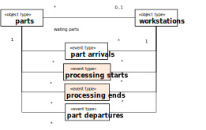
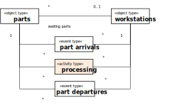
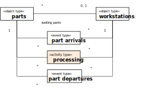
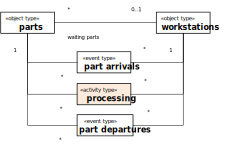

3.1.1. Conceptual Modeling of Simple Activities
Conceptually, an activity is a composite event that is composed of, and temporally framed by, a pair of start and end events. Consequently, whenever a model contains a pair of related start and end event types, like processing start and processing end in the model of a manufacturing workstation shown on the left-hand side of Figure 3-1 and Figure 3-2, they can be replaced with a corresponding activity type, like processing, as shown on the right-hand side.
 

It is obvious that applying this replacement pattern leads to a conceptual and visual simplification of the models concerned.